Shading
Shading
When nothing is visible under a shading, you can use the following codes :
 "//" for cadrat-size shading :
"//" for cadrat-size shading :
 "/" for quarter shading :
"/" for quarter shading :
 "v/" for vertical shading :
"v/" for vertical shading :
 "h/" for horizontal shading :
"h/" for horizontal shading :
For shading parts of a cadrat, use "#", followed by the figures 1,2,3,4
 '1' fills the start-top corner of the cadrat: p*t:pt#1 gives 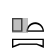
'1' fills the start-top corner of the cadrat: p*t:pt#1 gives 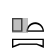
 '2' fills the end-top corner of the cadrat : p*t:pt#2 gives 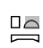
'2' fills the end-top corner of the cadrat : p*t:pt#2 gives 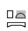
 '3' fills the start-bottom corner of the cadrat: p*t:pt#3 gives 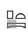
'3' fills the start-bottom corner of the cadrat: p*t:pt#3 gives 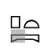
 '4' fills the end-bottom corner of the cadrat: p*t:pt#4 gives 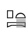
'4' fills the end-bottom corner of the cadrat: p*t:pt#4 gives 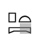
These codes can be combined :
 p*t:pt#13 gives 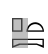
p*t:pt#13 gives 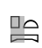
 p*t:pt#14 gives 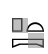
p*t:pt#14 gives 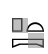
 p*t:pt#1234 gives
p*t:pt#1234 gives
For shading large parts of texts, use "#b" (shade begin) and "#e" (shade end) :
zone shading
 i-W-bA:k-A1-#b-Xr:r-n:h:t-#e-xt:Z1
i-W-bA:k-A1-#b-Xr:r-n:h:t-#e-xt:Z1
Sign overlapping
It's possible to combine signs using the operator "##". The result is not always very good, though.
Exempli gratia:
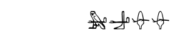
 m##a-a##b-M3##M1-M1##M3
m##a-a##b-M3##M1-M1##M3
Note that the "official" operator for this is "#", but I suggest you use "##" instead,
for
"#" has been much over abused (it means too many things).
In any case, JSesh will transform all "#" into "##" when saving !
Red zones
A zone of text can be written in red with "$r" (begin red) and $b (begin black) operators
 $r-HAt:a_-m_-s-b-sbA-A-i-i-t:Y1-arq:Z1_-m_-anx-n:x-Y1v_-$b-mt:t-r:W-Dba-Dba-Hw-A2-Z3_-n_-W-DA-A-Y1v_-
$r-HAt:a_-m_-s-b-sbA-A-i-i-t:Y1-arq:Z1_-m_-anx-n:x-Y1v_-$b-mt:t-r:W-Dba-Dba-Hw-A2-Z3_-n_-W-DA-A-Y1v_-
Individual signs can be written in red by writing "\red" after them
This is a JSesh specificity.
 p*p:p\red*p-
p*p:p\red*p-
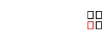